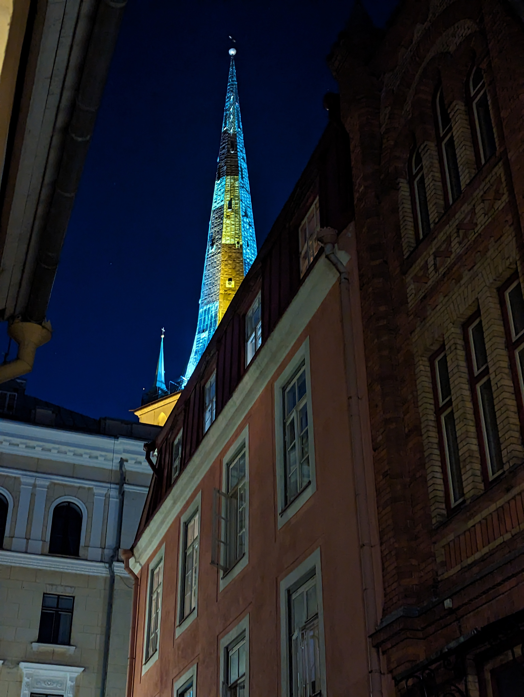
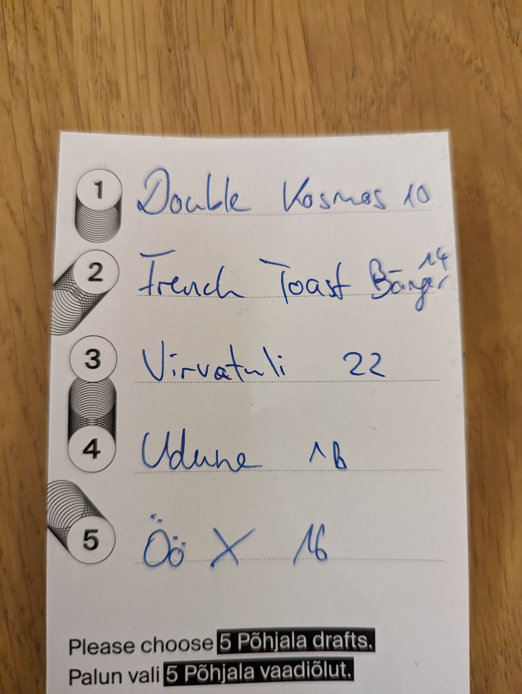

Work on the new website
Over the coming week I concentrated my efforts on the designing of the website.
For that I needed to brainstorm how the upcoming website was supposed to look like, that includes the general style, the color palette, the dimensions of it's elements and more broadly speaking what the company stands for, what the values are and what it wants to represent.
However there were some limitations and basic conditions I needed to consider.
For once the website needed to be in dark theme... Great because it is my favourite... as you might have realized by now :D
On the other hand I recieved a mockup about the general styling and I needed to work with the current logo and it's very aggressive red color.
The latter turned out to be the biggest challange, as the company wanted to be portraied as modern/futuristic, professional but not boring corporate and minimalistic.
Combining every stile together wasn't easy and I am not completly happy with how it looks up until now, so I will need to redesign it sooner or later.
On a sidenote, I installed Ubuntu on a Windows 11 PC to run in dual boot. It was so easy I honestly consider it doing on my main PC as well.
Monday-Friday, August 7th-11th
Diving into the culture of Tallinn
Tourists that come to Tallinn and that like going to many museums I recommend the Tallinn City Card.
It costs 34€ per day, grants you access to many museums, discounts at many shops and includes a ticket for public transport.
On the weekend I went on a calming nightly walk with my roommate and another friend from Germany, inside and around the old town, which is alway a nice activity, due to the fact that the city is beautifully lit up by night.

On our way back home we came across a club at Rataskaevu street with very many young people sitting outside and dancing inside.
We spontaniously decided to jump right into it :D
It wasn't the type of club I would usually visit, but for 2 hours and for an entry of 10€ it was a nice experience.
On the next day me and my freind from Germany went on a sightseeing trip in the old town.
If you are looking for good lookout point I higly recommend the ones on the upper elevations of the historic city center, behind the St Mary's Cathedral.
Furthermore there are some beautifull and interesting buildings.
 After that we visited the KGB prison cell museum, which was alright and finished the tour with traditional Estonian food at III Draakon and joined my roommate in a local brewery for a couple beers.
Personally I can recommend the first three beers from my list.
After that we visited the KGB prison cell museum, which was alright and finished the tour with traditional Estonian food at III Draakon and joined my roommate in a local brewery for a couple beers.
Personally I can recommend the first three beers from my list.
 My higlight however would only begin after the drinks, with the attendance of the dark side of the moon festival inside the techno club HALL.
Friday-Saturday, August 11th-13th